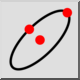
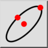
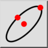
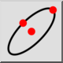

Ellipse (Center, Point, Ratio)
Toolbar / Icon:
 

Menu: Draw > Ellipse > Ellipse (Center, Point, Ratio)
Shortcut: E, P
Commands: ellipse | ep
Toolbar / Icon:
 

Menu: Draw > Ellipse > Ellipse (Center, Point, Ratio)
Shortcut: E, P
Commands: ellipse | ep
Draws ellipses with a given center, major axis and minor axis.